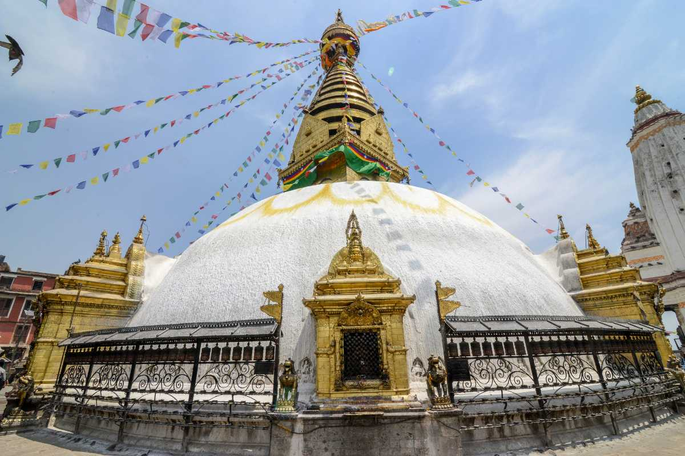
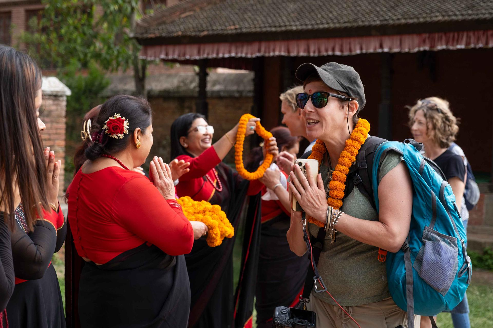
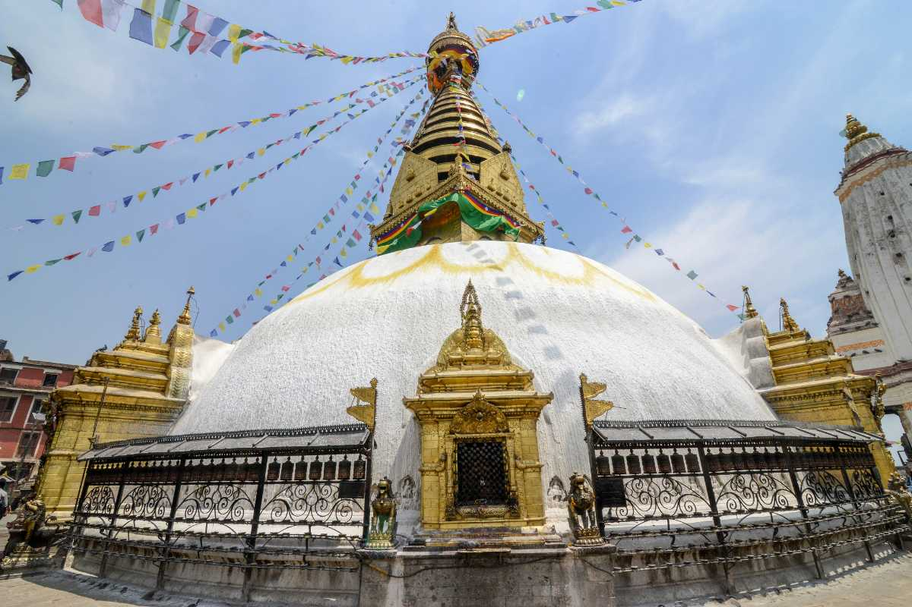
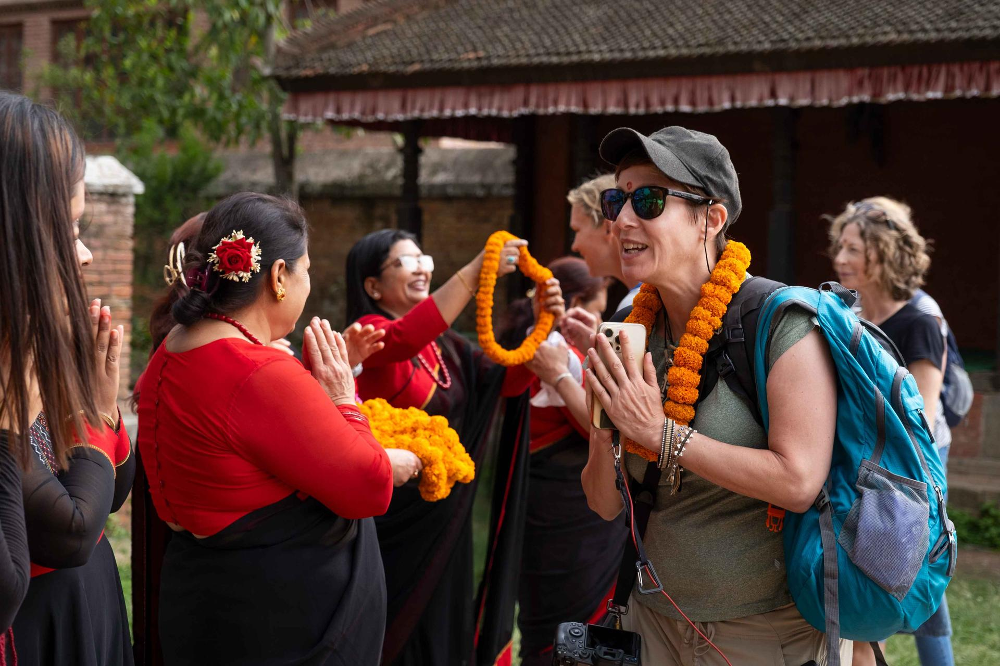

About Us
Laxman Travel Agency Welcomes to you the Himalayan Country of Nepal and Unique Country in the world. Himalayan Country of Nepal is 60 meters to 8,848 meters above from sea level which is highest peak in the world Mt. Everest. Unique Country in the world, Nepal has Deepest George in the world(Kaligandagi George) & Highest Lake in the world(Tilicho Lake) are located in Nepal.
Laxman Travel Agency is Travels and Adventure Company with Government Authorized legal Documents. Our team provides Travel, Tours in Nepal, Trekking in Nepal, Holiday Packages and Adventure expeditions in the Himalayan Country of Nepal. Namaste Nepal Travels Provide Tibet Tour, Bhutan Tour, & many more holiday package for different countries and destinations. We established Namaste Nepal Travels & Tours, with the aim of allowing Excellence Services for Tours in Nepal, Trekking in Nepal, Himalayan Region, Culture of Nepal, Sight Seeing Tour, Jungle Safari Tour, Hiking, Rafting, Paragliding, Mountain Expedition and Untouched beauty of Nature in Nepal.
For the Tours in Nepal, Trekking in Nepal, Holidays and Air Ticketing, We offer and we are committed to making your time in Nepal special and unique experience with Namaste Nepal Travels. We will work with you to design a Tours, Trekking, Hiking, Expedition & Holiday Packages that includes everything you want to see and do. Please sent us an E-mail, we will create your Tour in Nepal, Trekking in Nepal, Sight Seeing in Heritage Site and many more Trip will be your unforgatable trip in your Life.
Our Best Selling Trips
 


